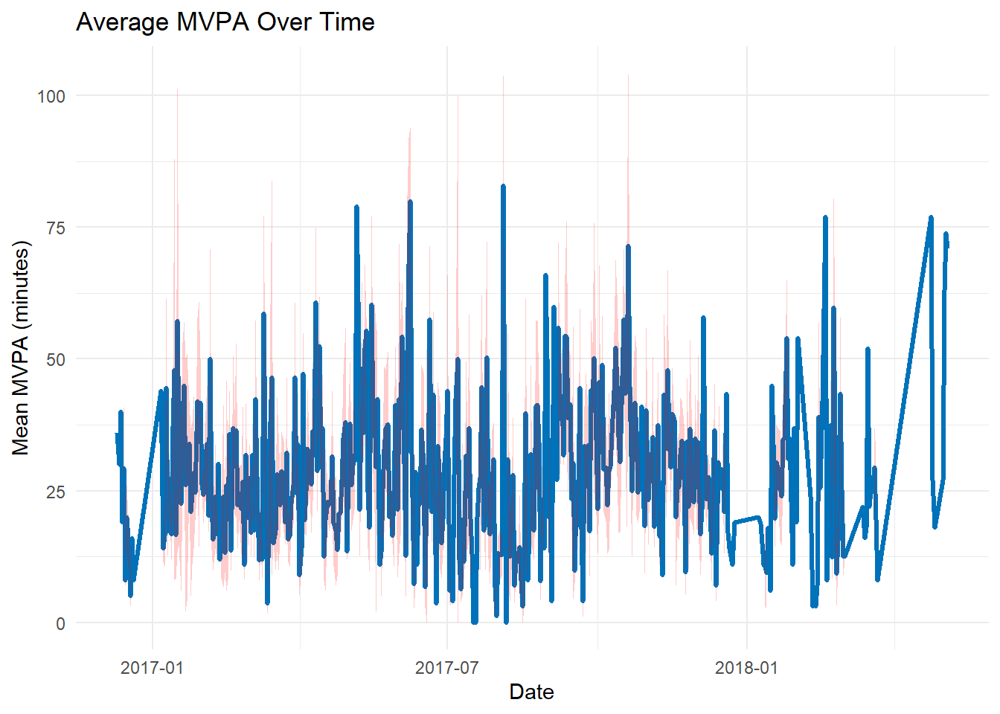
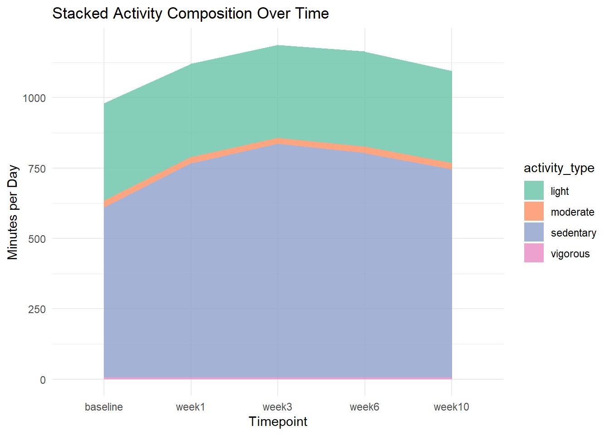
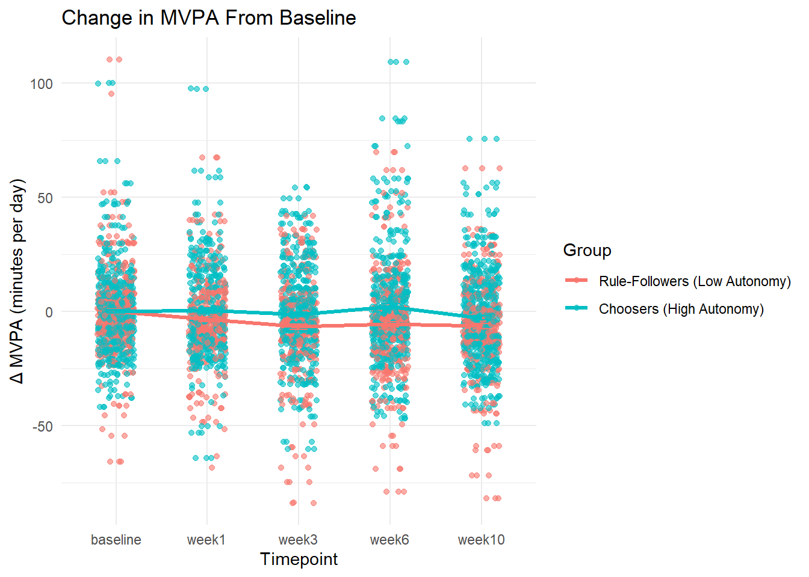

Warning: Using `size` aesthetic for lines was deprecated in ggplot2 3.4.0.
ℹ Please use `linewidth` instead.
Warning: Removed 63 rows containing missing values or values outside the scale range
(`geom_ribbon()`).

This graph shows how participants’ average daily moderate-to-vigorous physical activity (MVPA) changed over the full study period. While there’s a lot of day-to-day variation, we can see some general ups and downs that might reflect seasonal changes — like people being more active during warmer months and less so in the winter.
That said, this plot alone doesn’t offer conclusive evidence about the video game’s impact on physical activity. However, it gives us a useful overall picture of how MVPA fluctuated throughout the study period. To better assess potential effects of gameplay, we’ll next look at changes in MVPA across defined timepoints — from baseline to later weeks.
This boxplot illustrates the distribution of daily MVPA across all five timepoints: baseline, week1, week3, week6, and week10. The median MVPA remains relatively consistent over time, with only slight fluctuations, suggesting no major shifts in overall group activity. The interquartile range is stable, and the presence of outliers at each timepoint indicates that while some individuals had very high activity levels, most participants clustered within a similar range. While we can’t conclude strong effects from this plot alone, the consistency across timepoints suggests that, at the group level, MVPA did not markedly increase or decrease throughout the study.
# Summarize average activity per timepointcomposition_df <- actigraph_df |> dplyr::group_by(timepoint) |> dplyr::summarise(sedentary =mean(sedentary, na.rm =TRUE),light =mean(light, na.rm =TRUE),moderate =mean(moderate, na.rm =TRUE),vigorous =mean(vigorous, na.rm =TRUE) )# Ensure timepoint is an ordered factorcomposition_df <- composition_df |>mutate(timepoint =factor(timepoint, levels =c("baseline", "week1", "week3", "week6", "week10")))# Pivot to long formatcomposition_long <- composition_df |>pivot_longer(cols =c(sedentary, light, moderate, vigorous),names_to ="activity_type",values_to ="minutes")ggplot(composition_long, aes(x = timepoint, y = minutes, fill = activity_type, group = activity_type)) +geom_area(position ="stack", alpha =0.8) +labs(title ="Stacked Activity Composition Over Time",x ="Timepoint",y ="Minutes per Day" ) +scale_fill_brewer(palette ="Set2") +theme_minimal()
From this graph, we observe a slight increase in participants’ sedentary behavior over time, while moderate, light, and vigorous activity levels remained relatively stable. From the graph, we find that active games has minimal effect on improving participants’ activity time. Participants’ sedentary time increased as they play active games.
ggplot(actigraph_df, aes(x = timepoint, y = mvpa, group = participant_id)) +geom_line(alpha =0.2, color ="#0072B2") +stat_summary(aes(group =1), fun = mean, geom ="line", color ="red", size =1.2) +labs(title ="Individual MVPA Trajectories Over Time",x ="Timepoint",y ="MVPA (minutes/day)" ) +theme_minimal()

In this graph, the mean MVPA (red line) shows only minimal fluctuation across timepoints, indicating that, on average, participants did not significantly increase their MVPA. While a few individuals exhibited spikes or drops in activity, most participants remained consistently below 50 minutes per day.
These results suggest that the intervention (e.g., active games or engagement strategy) had limited effect in shifting daily MVPA levels. The relatively flat group mean trend implies that participants maintained similar activity patterns throughout the study.
3.5 Graph 5: Change in MVPA from the baseline (grouped by groups – difference autonomy of choosing games)
Warning in left_join(actigraph_df, select(liking_df, participant_id, group), : Detected an unexpected many-to-many relationship between `x` and `y`.
ℹ Row 1 of `x` matches multiple rows in `y`.
ℹ Row 1 of `y` matches multiple rows in `x`.
ℹ If a many-to-many relationship is expected, set `relationship =
"many-to-many"` to silence this warning.
Warning: Removed 330 rows containing non-finite outside the scale range
(`stat_summary()`).
Warning: Removed 330 rows containing non-finite outside the scale range
(`stat_summary()`).
Warning: Removed 330 rows containing missing values or values outside the scale range
(`geom_point()`).

The graph shows that across all follow-up timepoints (weeks 1, 3, 6, and 10), the average change in MVPA for both groups remained close to zero. Participants with high autonomy has slightly higher average change in MVPA compared to rule followers.However, the incrase wasn’t significant enough to conclude intervention lead to improvement in MVPA.